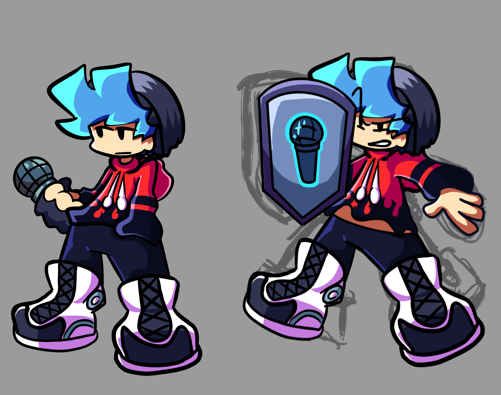
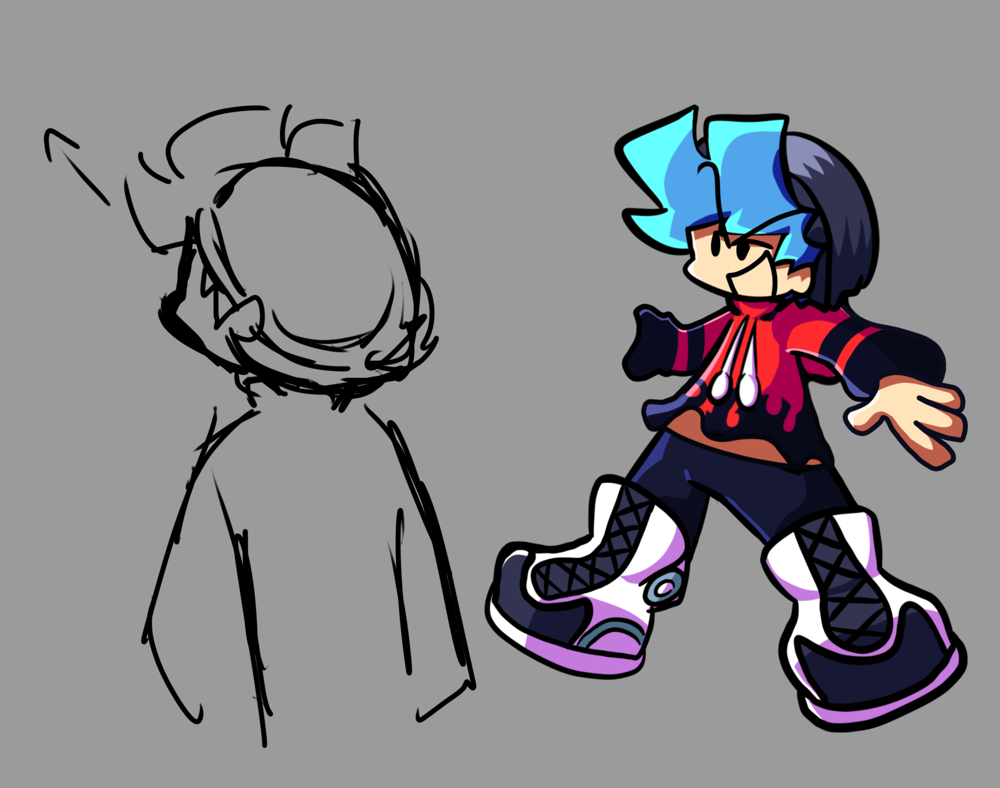
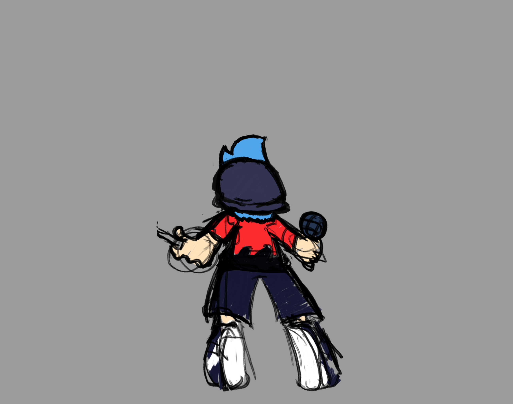
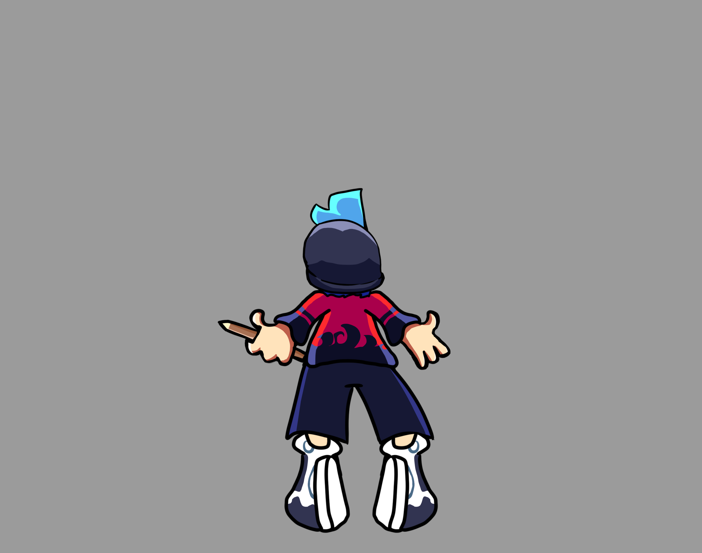

Gameplay v2
Registro de gameplay conservado de Descarion.
Fue descartado por que se podria mejorar; incluso fue anadido oficialmente a NRX.

Este archivo conserva material de desarrollo de Kargem. El orden de las songs es Descarion, Frustration que despues se convierte en Irritation, Stellarium y Caged.
Registro de gameplay conservado de Descarion.
Frustration fue la segunda song. Despues se convierte en Irritation.
Gameplay de la segunda song.
Segunda version de gameplay conservada.
El rework que transforma Frustration en Irritation.
Cinematica antigua de Stellarium.
Gameplay de la tercera song.
Cinematica conservada de Caged.
Idea visual conservada para Caged.



